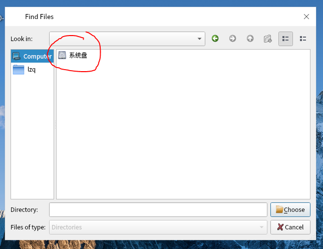
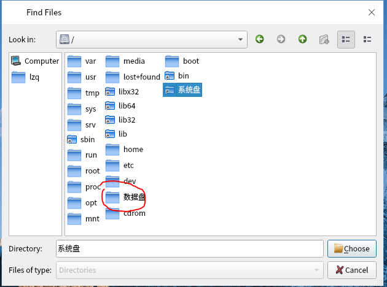
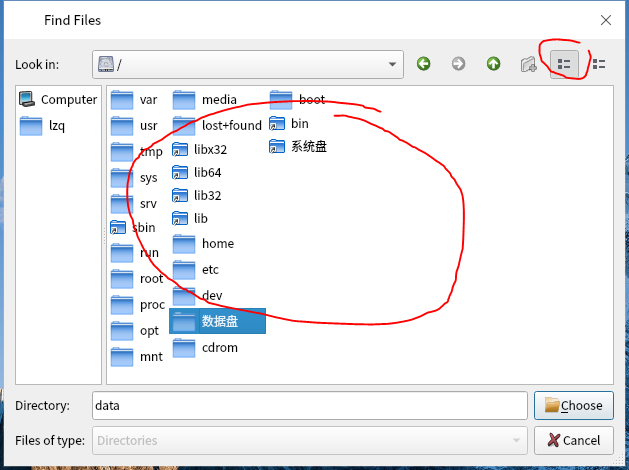
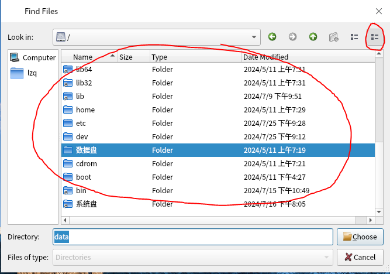

操作系统: 银河麒麟V10SP1
qt版本 : 5.12.12
界面设计师要求qt原生的文件选择界面,需要将linux特定的路径修改为中文,毕竟大部分用户是没有linux操作系统基础的
最终要求的效果,/修改为系统盘,/data修改为数据盘如下


经过分析,这是一个界面显示问题,需要将界面中item修改为指向的名称
在接触这个问题时,我刚好温习了一下qt视图/模型机制,数据都是存放在模型里面的,视图只是显示数据而已,所以第一想到的就是修改模型中的数据
看了一下源码,QFileDialog的模型使用的时QFileSystemModel,我于是分析了一下这个模型里面的代码,确实比较复杂,原先以为是简单的获取linux系统目录树然后再存起来,这样我就可以在这个过程中把数据修改
结果并不是,这块代码是改不了一点
模型改不了,我就想着是不是能够修改视图显示效果,这样其实也有好处,不会直接修改模型数据,保证其他地方使用模型数据肯定是正确的
这时候就可以用到委托了,修改显示效果且不修改模型数据,下面我直接贴出代码
上面的效果图中需要修改显示效果的组件是QFileDialogListView和QFileDialogTreeView,其实就是继承QListView和QTreeView
下图是QFileDialogListView组件界面

下图是QFileDialogTreeView组件界面

既然在上面提到通过修改委托来改变显示效果,那么就需要为对应组件创建一个新的委托类
//创建新的委托类
class FileItemShowDelegate : public QStyledItemDelegate{
protected:
//对item样式进行初始化,显示效果也是从这里修改
void initStyleOption(QStyleOptionViewItem *option,const QModelIndex &index) const override;
public:
FileItemShowDelegate(QObject *parent = nullptr);
//绘制item函数
void paint(QPainter *painter, const QStyleOptionViewItem &option,const QModelIndex &index) const override;
};
//initStyleOption中绝大部分代码和QStyledItemDelegate中的一样
//只是在给text赋值时增加了一个逻辑判断
//从这个函数的代码里面可以看到不同角色对应着不同的数据
void FileItemShowDelegate::initStyleOption(QStyleOptionViewItem *option, const QModelIndex &index) const
{
QVariant value = index.data(Qt::FontRole);
if (value.isValid() && !value.isNull()) {
option->font = qvariant_cast(value).resolve(option->font);
option->fontMetrics = QFontMetrics(option->font);
}
value = index.data(Qt::TextAlignmentRole);
if (value.isValid() && !value.isNull())
option->displayAlignment = Qt::Alignment(value.toInt());
value = index.data(Qt::ForegroundRole);
if (value.canConvert())
option->palette.setBrush(QPalette::Text, qvariant_cast(value));
option->index = index;
value = index.data(Qt::CheckStateRole);
if (value.isValid() && !value.isNull()) {
option->features |= QStyleOptionViewItem::HasCheckIndicator;
option->checkState = static_cast(value.toInt());
}
value = index.data(Qt::DecorationRole);
if (value.isValid() && !value.isNull()) {
option->features |= QStyleOptionViewItem::HasDecoration;
switch (value.type()) {
case QVariant::Icon: {
option->icon = qvariant_cast(value);
QIcon::Mode mode;
if (!(option->state & QStyle::State_Enabled))
mode = QIcon::Disabled;
else if (option->state & QStyle::State_Selected)
mode = QIcon::Selected;
else
mode = QIcon::Normal;
QIcon::State state = option->state & QStyle::State_Open ? QIcon::On : QIcon::Off;
QSize actualSize = option->icon.actualSize(option->decorationSize, mode, state);
// For highdpi icons actualSize might be larger than decorationSize, which we don't want. Clamp it to decorationSize.
option->decorationSize = QSize(qMin(option->decorationSize.width(), actualSize.width()),
qMin(option->decorationSize.height(), actualSize.height()));
break;
}
case QVariant::Color: {
QPixmap pixmap(option->decorationSize);
pixmap.fill(qvariant_cast(value));
option->icon = QIcon(pixmap);
break;
}
case QVariant::Image: {
QImage image = qvariant_cast(value);
option->icon = QIcon(QPixmap::fromImage(image));
option->decorationSize = image.size() / image.devicePixelRatio();
break;
}
case QVariant::Pixmap: {
QPixmap pixmap = qvariant_cast(value);
option->icon = QIcon(pixmap);
option->decorationSize = pixmap.size() / pixmap.devicePixelRatio();
break;
}
default:
break;
}
}
//获取显示角色的数据
value = index.data(Qt::DisplayRole);
if (value.isValid() && !value.isNull()) {
option->features |= QStyleOptionViewItem::HasDisplay;
option->text = displayText(value, option->locale);
//汉化路径 原始文本数据
QString text = index.data().toString();
//获取索引对应的绝对路径用来作为唯一判断
const QFileSystemModel * pmodel = static_cast(index.model());
QString filepath = pmodel->filePath(index);
if(filepath == "/" || filepath == "/data"){//先判断是否为正确的路径,其他路径不做修改
//修改文本显示
if(text == "/"){
option->text = "系统盘";
}else if(text == "data"){
option->text = "数据盘";
}
}
}
option->backgroundBrush = qvariant_cast(index.data(Qt::BackgroundRole));
// disable style animations for checkboxes etc. within itemviews (QTBUG-30146)
option->styleObject = 0;
}
//绝大部分代码和QStyledItemDelegate中的一样
void FileItemShowDelegate::paint(QPainter *painter, const QStyleOptionViewItem &option, const QModelIndex &index) const
{
if (!index.isValid() || painter == nullptr) {
return;
}
QStyleOptionViewItem opt = option;
this->initStyleOption(&opt, index);
const QWidget *widget = opt.widget;
QStyle *style = widget ? widget->style() : QApplication::style();
style->drawControl(QStyle::CE_ItemViewItem, &opt, painter, widget);
}
现在自定义委托类完成了,接下来就是设置组件使用委托类
//在QFileDialog的构造函数中执行就好了
m_delegate = new FileItemShowDelegate;
d->qFileDialogUi->listView->setItemDelegate(m_delegate);
d->qFileDialogUi->treeView->setItemDelegate(m_delegate);